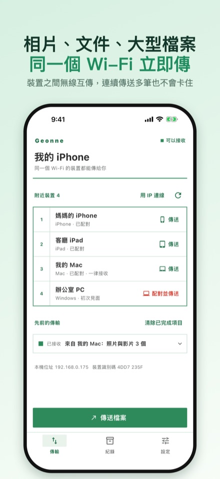
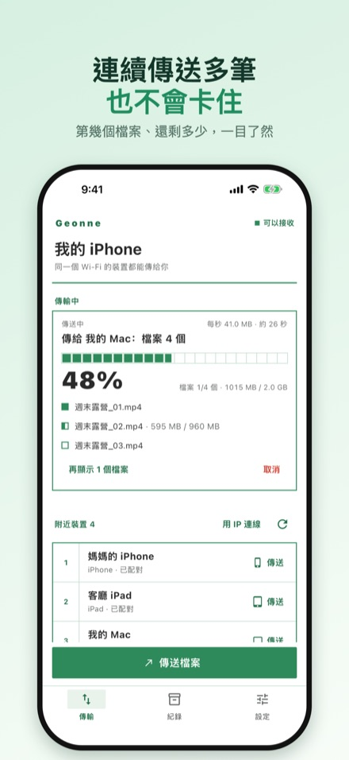
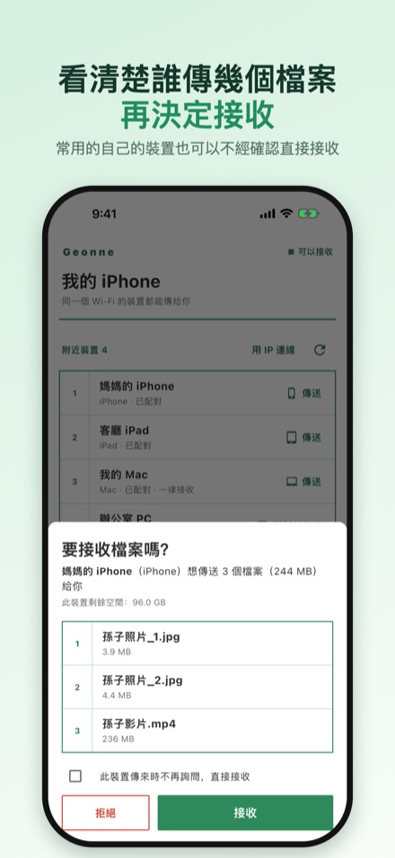
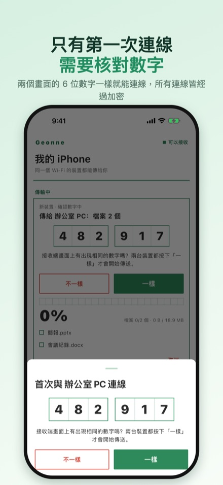
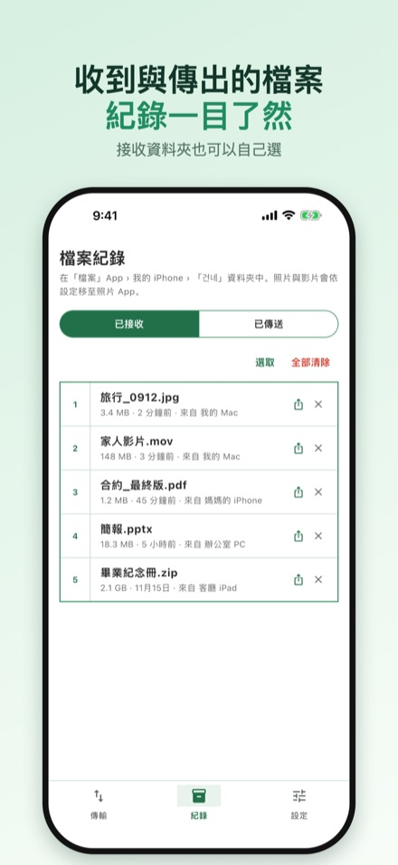
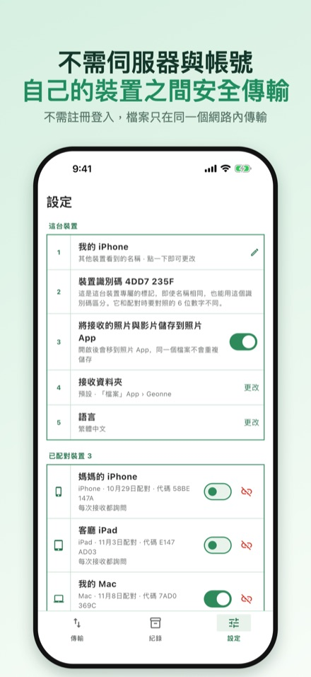

相片、文件、大型檔案同一個 Wi-Fi 立即傳。
在同一個 Wi-Fi 中，於自己的裝置之間無線傳送，不需要傳輸線。連續傳送多筆也不會卡住，傳輸中斷時只會接著傳送剩下的檔案。不需伺服器與帳號，裝置之間直接傳輸，所有連線皆經過加密。
iPhone、iPad 與 Android App 可在 App Store 與 Google Play 取得。

這些時候很好用
相片・影片
把旅行拍的相片與影片，從手機直接傳到 Mac 或電腦。不需要線，也不經過雲端。
文件・檔案
合約、作業、壓縮檔，在自己的裝置之間直接傳。
大型檔案
數 GB 的影片也能原樣傳送。連續傳送也不會卡住，中斷時只會接著傳送剩下的。
畫面長這樣
這是 iPhone 畫面範例，裝置名稱與檔案僅為示範。






可以放心使用的原因
不需伺服器，不需帳號
檔案不經過網際網路伺服器，而是在同一個網路內於裝置之間直接傳輸。不需註冊、不需登入。
加密與 6 位數字核對
所有連線皆經過加密，初次連線的裝置必須核對兩個畫面上的 6 位數字才會連線。
每個裝置都是同一個 App
iPhone、iPad、Android、Mac、Windows 使用方式一致，支援 한국어、English、日本語、繁體中文。
自己的裝置直接接收
常用的自己的裝置可開啟「一律接收」，並可查看接收與傳送的紀錄。
下載
iPhone 與 iPad
Android 手機與平板
Windows 10・11（64 位元）· 約 12MB
安裝方法
最新版：1.0.0 · 2026 年 11 月 16 日 · Mac 與 Windows 版沒有廣告
在 Mac 安裝
-
開啟下載的檔案
連按兩下用上方按鈕下載的 Geonne-1.0.0.dmg，會開啟一個小視窗。
-
把 Geonne 拖曳到「應用程式」資料夾
把視窗中的 Geonne 圖示拖曳到旁邊的 Applications（應用程式）資料夾，安裝就完成了。之後可以關閉視窗，並把 dmg 檔丟進垃圾桶。
-
從「應用程式」開啟 Geonne
第一次開啟時，如果出現「這是從網際網路下載的 App」的確認視窗，請按 [打開]。這是通過 Apple 檢查的 App，不會出現其他警告。
-
在「本機網路」的許可視窗按 [允許]
要找到同一個 Wi-Fi 上的其他裝置，必須允許。若不小心按了不允許，請到 系統設定 → 隱私權與安全性 → 本機網路 開啟 Geonne。
在 Windows 安裝
-
下載並開啟安裝檔
按上方的 [下載 Windows 版]，Geonne-Setup-1.0.0 檔案會存到下載資料夾。請連按兩下開啟。
-
若出現「Windows 已保護您的電腦」，請按 [其他資訊] → [仍要執行]
這是尚未取得 Microsoft 憑證的小型公司程式，第一次執行時可能會出現這個提示。按視窗中的 [其他資訊]，會顯示應用程式名稱 Geonne-Setup-1.0.0.exe 與發行者，下方出現 [仍要執行] 按鈕，請按下它。
視窗顏色會依電腦的色彩設定，可能呈現藍色、紫色等不同顏色。 -
在安裝精靈依序按 [下一步] → [安裝] → [完成]
預設不需要系統管理員密碼，只為目前登入的使用者安裝。需要桌面捷徑的話請勾選。最後一頁保持勾選 [執行 Geonne] 並按 [完成]，就會立刻開啟。之後從開始功能表的 Geonne 開啟即可。
-
若出現防火牆視窗，請按 [允許存取]
若出現「Windows Defender 防火牆已封鎖此應用程式的部分功能」，請確認已勾選私人網路，再按 [允許存取]。若被封鎖，裝置之間就看不到彼此。
第一次連線並傳送
-
在兩台裝置開啟 Geonne
在連上同一個 Wi-Fi 的兩台裝置開啟 Geonne，幾秒內就會出現在彼此的附近裝置清單中。
-
按要傳送的裝置旁的 [傳送]，再選擇檔案
第一次見面的裝置是 [配對並傳送]。Mac 與 Windows 也可以把檔案拖曳到視窗中。可以一次選取多個，大型檔案也能原樣傳送。
-
只有第一次需要核對 6 位數字
第一次見面的裝置，兩個畫面會顯示相同的 6 位數字。若一樣，請在兩台裝置都按 [一樣]（接收端的按鈕是 [一樣，接收]）。傳輸就會開始，之後不會再詢問數字。
-
在接收端按 [接收]
已連線過的裝置傳來檔案時，看看是誰傳了幾個檔案，再按 [接收]。常用的自己的裝置可以開啟「一律接收」，不必每次確認。
常見問題
清單中看不到另一台裝置
請確認兩台裝置在同一個 Wi-Fi，且兩邊都開著 Geonne。部分路由器的「AP 隔離」，以及公司、咖啡店的訪客 Wi-Fi，會讓裝置彼此看不到。這時請在 Geonne 畫面的 [用 IP 連線] 直接輸入對方裝置的位址。Mac 請檢查本機網路許可，Windows 請檢查防火牆許可。
檔案會經過網際網路伺服器嗎？
不會。檔案在同一個網路內於裝置之間直接傳輸，所有連線皆經過加密。也不需要註冊或登入。
可以整個資料夾傳送嗎？
目前還不支援。請先把資料夾壓縮成 zip 檔再傳送。
如何取得新版本？
從這個頁面下載新的安裝檔並直接安裝，就會覆蓋舊版。
如何移除？
Mac 請把「應用程式」資料夾中的 Geonne 丟進垃圾桶。Windows 請到 設定 → 應用程式 → 已安裝的應用程式，找到 Geonne 並按 [解除安裝]。
個人資料會如何處理？
Mac 與 Windows 版沒有廣告也沒有帳號，檔案與紀錄只保存在自己的裝置中。詳情請見隱私權政策。
聯絡我們
歡迎提出使用問題、錯誤回報與個人資料相關詢問。